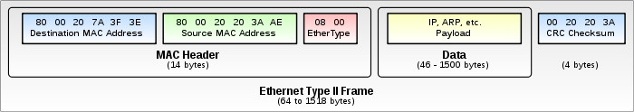

记录网络编程的基本概念
笔记大部分内容来自《TCP/IP网络实验程序篇》这本书前两章。
这本书含有大量的实用程序，可以帮助学习网络编程，而且书中代码可以免费下载。
1.关于分层寻址
应用层使用域名，传输层使用端口号，网络层使用IP地址，以太网层使用MAC。
1.域名寻址，可以把/etc/hosts 文件理解成常用域名和IP对应的缓存文件，如果找不到，就去DNS服务器查找。
DNS服务器配置一般在/etc/resolv.conf 文件中。
2.进程寻址，服务名和端口号一般在/etc/services 文件中，记录的是常用服务名和端口号。
3.网络寻址，这个就比较复杂了，暂且略过。
4.物理寻址，一般是指ARP。
2.什么是socket?什么是端口?什么是网络地址?
socket是一个文件描述符(fd),如在Python交互式环境中:
1 2 3 4
| >>> import socket >>> s = socket.socket() >>> s <socket._socketobject object at 0xb749fe2c>
|
这样只是打开了一个文件描述符，和打开一个文件类似。
做一个实验:
1 2 3 4 5 6 7 8 9 10
| import socket import time socks = [] for i in range(1000): s = socket.socket(socket.AF_INET, socket.SOCK_STREAM) socks.append(s) print len(socks) time.sleep(120)
|
运行以上脚本，打开1000个socket，观察netstat,发现打开的TCP端口并没有增加。
端口是一个应用程序打开的虚拟接口(最多有65535个，如果分TCP和UDP，就是65535*2)，这个接口依赖socket。
网络地址是IP地址+端口组成的地址。有了IP地址，可以找到主机，有了端口号，可以找到对应进程，从而进行通信。
3.关于端序
其实就是12345678里面12是放在前面还是后面的问题(为什么不能统一呢)。
使用Python获取本机的端序:
1 2 3 4 5 6 7
| In [3]: import sys In [4]: sys.b sys.builtin_module_names sys.byteorder In [4]: sys.byteorder Out[4]: 'little'
|
4.关于以太网帧的说明
关于以太网帧的示例图如图1所示:

图1
第一部分是以太网头(14个字节)，第二部分是上层协议所带的数据(46-1500个字节)，最后一部分是一个校验和(4个字节)。
那么以太网帧长度从(14+46+4=64 到 14+1500+4=1518 不等)
以太网地址是6个字节的地址，在网卡出厂时已经固定，前三个字节(OUI)用于表示网卡由哪个厂商制造。
OUI的列表在这里可以找到。
在Linux系统的在/usr/include/net/ethernet.h文件中，包含了以太网头的定义：
1 2 3 4 5 6 7 8 9
| struct ether_header { u_int8_t ether_dhost[ETH_ALEN]; u_int8_t ether_shost[ETH_ALEN]; u_int16_t ether_type; } __attribute__ ((__packed__)); 其中 ETH_ALEN 在 /usr/include/linux/if_ether.h中定义如下： #define ETH_ALEN 6
|
可以看出以太网头部，有源地址，目的地址(都是6个字节)和以太网类型3个字段。
其中以太网类型包括以下几种:
1 2 3 4 5 6 7 8 9 10 11
| #define ETHERTYPE_PUP 0x0200 #define ETHERTYPE_SPRITE 0x0500 #define ETHERTYPE_IP 0x0800 #define ETHERTYPE_ARP 0x0806 #define ETHERTYPE_REVARP 0x8035 #define ETHERTYPE_AT 0x809B #define ETHERTYPE_AARP 0x80F3 #define ETHERTYPE_VLAN 0x8100 #define ETHERTYPE_IPX 0x8137 #define ETHERTYPE_IPV6 0x86dd #define ETHERTYPE_LOOPBACK 0x9000
|
最常见的是ARP和IP。
使用Python获取本机的MAC地址方法如下:
1 2 3 4 5 6 7 8 9 10
| import uuid def get_mac(): mac_num = hex(uuid.getnode()).replace('0x', '').upper() mac = '-'.join(mac_num[i : i + 2] for i in range(0, 11, 2)) return mac print get_mac()
|
以太网帧不能穿过路由器，只能在局域网中存在，如果需要穿过路由器，需要经过IP层解包，加上新的以太网头才能出去。
5.关于ARP(不能叫做ARP协议了，因为ARP中的P就是协议的意思~)
ARP(Address Resolution Protocol)是一个根据IP地址寻找MAC地址的协议，一般用在局域网中。
在以太网协议中规定，同一局域网中的一台主机要和另一台主机进行直接通信，必须要知道目标主机的MAC地址。而在TCP/IP协议
中，网络层和传输层只关心目标主机的IP地址。这就导致在以太网中使用IP协议时，数据链路层的以太网协议接到上层IP协议提供
的数据中，只包含目的主机的IP地址。于是需要一种方法，根据目的主机的IP地址，获得其MAC地址。这就是ARP协议要做的事情
。所谓地址解析（address resolution）就是主机在发送帧前将目标IP地址转换成目标MAC地址的过程。
另外，当发送主机和目的主机不在同一个局域网中时，即便知道目的主机的MAC地址，两者也不能直接通信，必须经过路由转发才
可以。所以此时，发送主机通过ARP协议获得的将不是目的主机的真实MAC地址，而是一台可以通往局域网外的路由器的MAC地址。
于是此后发送主机发往目的主机的所有帧，都将发往该路由器，通过它向外发送。这种情况称为ARP代理（ARP Proxy）。
报文格式如图2
图2
关于ARP协议的包定义可以在/usr/include/net/if_arp.h中查看:
1 2 3 4 5 6 7 8 9 10 11 12 13 14 15 16 17 18 19 20 21 22 23 24 25 26 27 28 29 30
| #define ARPOP_REQUEST 1 #define ARPOP_REPLY 2 #define ARPOP_RREQUEST 3 #define ARPOP_RREPLY 4 #define ARPOP_InREQUEST 8 #define ARPOP_InREPLY 9 #define ARPOP_NAK 10 in size; the arphdr structure defines the fixed-length portion. Protocol type values are the same as those for 10 Mb/s Ethernet. It is followed by the variable-sized fields ar_sha, arp_spa, arp_tha and arp_tpa in that order, according to the lengths specified. Field names used correspond to RFC 826. */ struct arphdr { unsigned short int ar_hrd; unsigned short int ar_pro; unsigned char ar_hln; unsigned char ar_pln; unsigned short int ar_op; #if 0 unsigned char __ar_sha[ETH_ALEN]; unsigned char __ar_sip[4]; unsigned char __ar_tha[ETH_ALEN]; unsigned char __ar_tip[4]; #endif };
|
ARP解析过程如下:
假定有A(192.168.10.104 MAC地址为80:00:27:49:84:68) 和 B(192.168.10.108 MAC地址为e8:4e:06:29:6d:6d)在用同一个局域网，需要通信。
1.A先查找ARP缓存，发现没有找到B的MAC地址缓存；
2.A发送ARP广播查询请求，对局域网内的所有主机广播，内容是192.168.10.108的主机，回答我你的MAC地址；
3.主机B收到ARP请求后，回答了A，并更新自己的ARP缓存，其他主机则不会响应A的询问；
4.当主机A收到了B的回复后，更新自己的ARP缓存。
使用实际的网络包查看过程：
先看下A(192.168.10.104)的ARP缓存
1 2 3 4
| arp -a ? (192.168.10.103) 位于 80:e6:50:08:19:66 [ether] 在 eth0 ? (192.168.10.106) 位于 c8:1e:e7:a1:3c:ab [ether] 在 eth0 ? (192.168.10.1) 位于 d0:c7:c0:0b:cb:4a [ether] 在 eth0
|
没有B主机的信息。
我们先ping一下B，在ping之前会发ARP请求:
1 2 3 4 5 6 7 8 9 10 11
| ping 192.168.10.108 PING 192.168.10.108 (192.168.10.108) 56(84) bytes of data. 64 bytes from 192.168.10.108: icmp_seq=1 ttl=128 time=1165 ms 64 bytes from 192.168.10.108: icmp_seq=2 ttl=128 time=156 ms 64 bytes from 192.168.10.108: icmp_seq=3 ttl=128 time=104 ms 64 bytes from 192.168.10.108: icmp_seq=4 ttl=128 time=499 ms 64 bytes from 192.168.10.108: icmp_seq=5 ttl=128 time=103 ms 64 bytes from 192.168.10.108: icmp_seq=6 ttl=128 time=4.33 ms ^C --- 192.168.10.108 ping statistics --- 6 packets transmitted, 6 received, 0% packet loss, time 5015ms
|
现在再看A的ARP缓存:
1 2 3 4 5
| arp -a ? (192.168.10.103) 位于 80:e6:50:08:19:66 [ether] 在 eth0 ? (192.168.10.108) 位于 e8:4e:06:29:6d:6d [ether] 在 eth0 ? (192.168.10.106) 位于 c8:1e:e7:a1:3c:ab [ether] 在 eth0 ? (192.168.10.1) 位于 d0:c7:c0:0b:cb:4a [ether] 在 eth0
|
这时候B的信息就加入A的缓存了。
把整个过程抓包看下数据包:

图3在ping之前会有ARP request，就是第13个包，如图4:
图4这里的广播地址是FF:FF:FF:FF:FF:FF，意思就是我是A(192.168.10.104)，问问大家，如果你的IP是192.168.10.108，赶紧告诉我你的MAC地址。
然后第14个包，是B(192.168.10.108)的回答，如图5:
图5
B收到请求后的reply，告诉A(192.168.10.104)，我是B(192.168.10.108)，我的MAC地址是e8:4e:06:29:6d:6d，然后A把B的IP和MAC做一个缓冲到A的主机中，这样就可以通信了。
未完待续